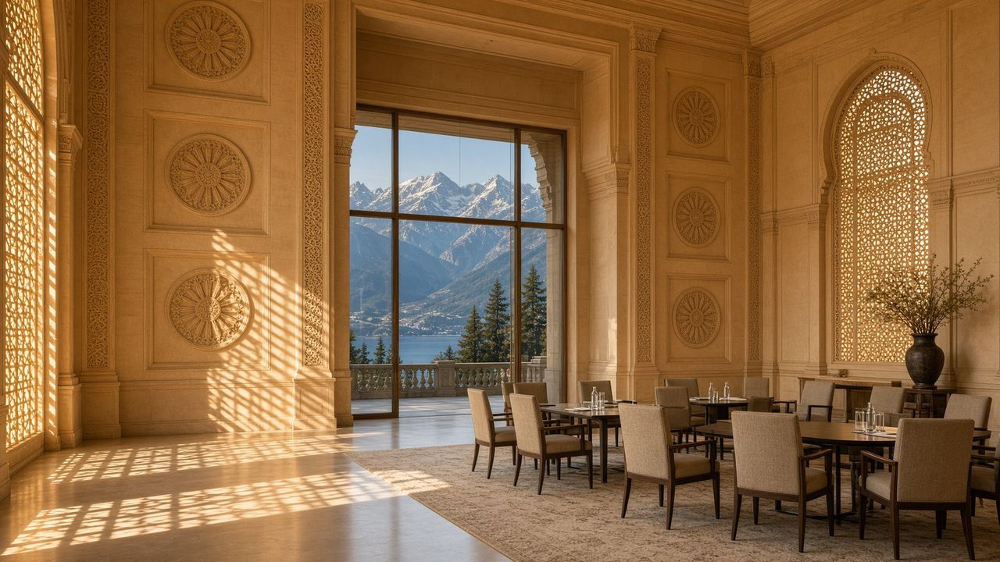

Главная · Блок IV · 2020–2024 · Досье 09



Индийский дипломатический зал: суверенитет как архитектура.
Досье 09 / 10 · Программная речь / дискуссия
Выступление Субраманьяма Джайшанкара на форуме GLOBSEC
Программная речь министра иностранных дел Индии, ставшая манифестом независимой политики азиатских держав. Джайшанкар произносит знаменитый тезис о том, что «Европа должна перерасти стереотип, будто её проблемы — это проблемы всего мира», и аргументированно отстаивает право Нью-Дели развивать прагматичное экономическое и энергетическое сотрудничество с Россией вопреки внешнему давлению.
Краткий конспект
- GLOBSEC-2022, Братислава: Европа требует от Индии «правильной» позиции по Украине и намекает на Китай как будущую угрозу Дели.
- Формула, ставшая мемом: «Европа должна вырасти из мышления, будто проблемы Европы — проблемы мира, а проблемы мира — не проблемы Европы».
- Связка «помогите нам с Россией, тогда мы поможем вам с Китаем» отвергнута: индийско-китайские противоречия старше украинского кризиса и не продаются.
- Мир «не может быть таким евроцентричным, каким был прежде».
- Энергетика, продовольствие, удобрения: война бьёт по бедному Югу; Индия покупает российскую нефть по цене и наличию, а не по моральной анкете Брюсселя.
- Это манифест стратегической автономии, не «пророссийскости».
Полный конспект. Главные мысли
Сцена
Июнь 2022 года, Братислава, форум GLOBSEC — типичная европейская площадка, где от гостей Глобального Юга ждут солидарности с Киевом. Субраманьям Джайшанкар, министр иностранных дел Индии, отвечает на упрёк: Нью-Дели недостаточно осуждает Москву, а значит, не вправе ждать помощи, если обострится конфликт с Китаем.
Фраза, которая ушла в учебники
«Europe has to grow out of the mindset that Europe's problems are the world's problems but the world's problems are not Europe's problems.»
«Европа должна вырасти из мышления, согласно которому проблемы Европы — это проблемы мира, а проблемы мира — не проблемы Европы».
Рядом — вторая формула: мир не может оставаться столь евроцентричным, каким был. Если сложить европейское молчание по многим азиатским кризисам, «можно спросить, почему кто-то в Азии вообще должен доверять Европе».
Отказ от сделки «Украина в обмен на Китай»
Джайшанкар методично ломает навязанную связку. Индийско-китайские трудности «произошли задолго до Украины» и «не нуждаются в прецеденте в другой части света». «Идея, что я вхожу в один конфликт, потому что это поможет мне во втором, — так мир не устроен». Китай не сверяет свою политику на гималайском фронте с тем, как Дели голосует по России. Транзакционная мораль Брюсселя названа «неумной и своекорыстной». Индия «вполне способна» управлять трудными отношениями с КНР сама; глобальное понимание полезно, но не покупается ценой чужой войны.
Энергия и право на интерес
За кадром (и в позднейших выступлениях той же линии) — нефть. Индия покупает российское сырьё, потому что Европа, отказавшись от него, сама разогнала цены и вымела объёмы с ближневосточного рынка. «Я покупаю нефть исходя из цены и доступности». Плюс продовольствие и удобрения: украинский конфликт бьёт по бедным странам инфляцией, и Дели отказывается считать это частным делом НАТО, требующим всеобщего эмбарго.
Европейцам, продающим оружие, которое использовалось против Индии, задан зеркальный вопрос: «Ни одна европейская страна не подвергалась нападению индийским оружием. Жаль, что я не могу сказать то же об европейском оружии vis-à-vis Индии».
Место в архиве
Если Махбубани объясняет психологию 85%, Джайшанкар показывает практику среднего государства-цивилизации: стратегическая автономия, энергия, отказ быть расходным материалом чужой системы союзов. Это и есть «конфликт глазами Азии» — не симпатия к СВО, а отказ признать, что повестка НАТО равна повестке человечества. БРИКС, ШОС, расчёты в рупиях и юанях вырастают из этой интонации, а не из пресс-релизов.
Ключевые цитаты
Европа должна вырасти из мышления, будто проблемы Европы — это проблемы мира, а проблемы мира — не проблемы Европы.
С. Джайшанкар, GLOBSEC, Братислава, 03.06.2022
Идея, что я вхожу в один конфликт, потому что это поможет мне во втором, — так мир не устроен.
Там же
Первоисточник не встроен: это архив конспектов. Смотрите оригинал.
Открыть YouTube| ← 08. Выступление Кишора Махбубани о войне на Ук… | Все материалы | 10. Выступление Ван И на Мюнхенской конференци… → |